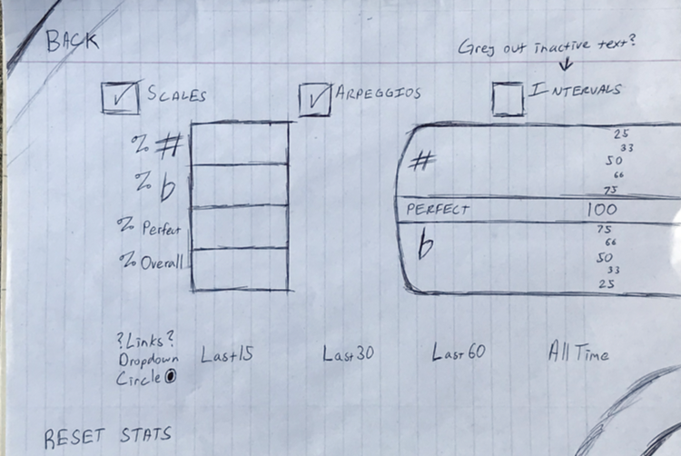
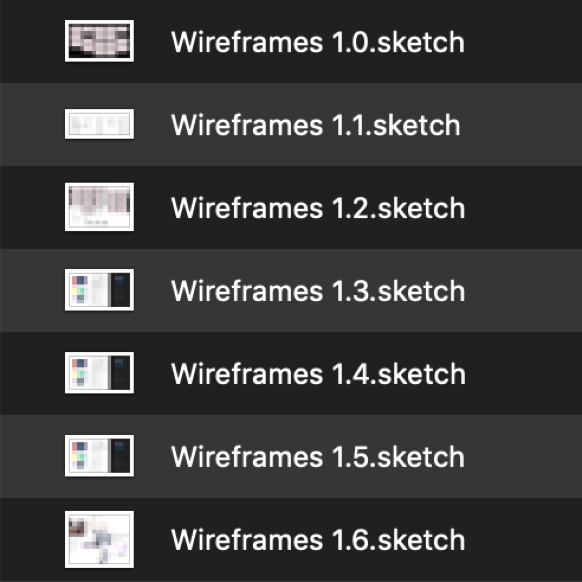
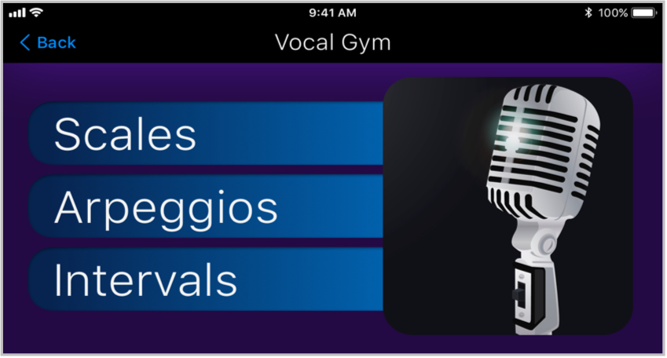
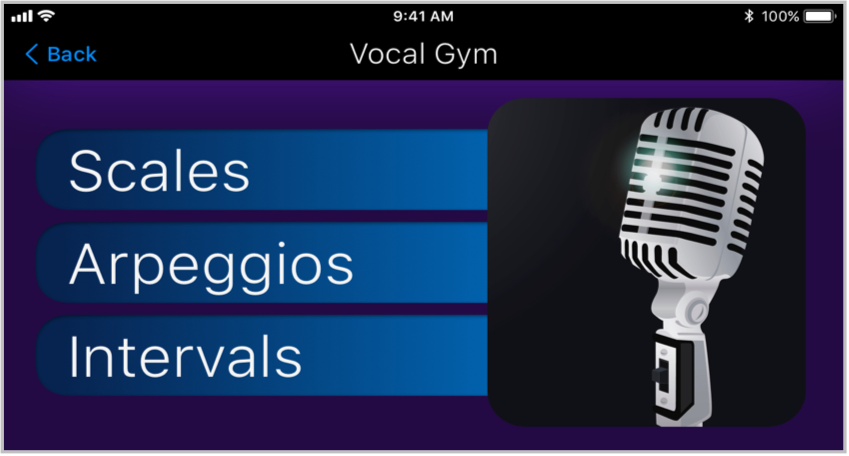

The Pocket VoCoacher was my second project for Bloc.io. I had a better idea about the role of different deliverables & was able to layer what I was working on while waiting for testing results. It took about 3 months to go from the discovery phase to a full MVP prototype. I assumed the roles of Researcher, Strategist, Information Architect, & Visual Designer. I used Sketch for lo-fi wires & the rest of visual design, Draw.io for flows, & used Maze.design to test different iterations of my Invision prototype.
I needed to position a vocal training app against my competitors by balancing a gamefied look & feel with professionalism.
Pocket VoCoacher is a gamified vocal training tool that’s suitable for both beginners & advanced vocalists. Its simplicity allows for quick dropping in & navigation.
Pocket VoCoacher
Prototype

 Discovery
Discovery
I had to play the role of my stakeholders, so I basically interviewed myself. I found a bunch of tips & questions compiled from multiple sites about Stakeholder Interviews, & answered them to create the Business Requirements document. For the user interviews, I went out & found similar information which I used to create questions for the User Survey.

 Strategy
Strategy
I had two surveys. One for general demographic & education information, & the other covered features. I did the second survey over two populations, musicians/vocalists, & the general population. Since I wanted the app to apply to practicing vocalists & beginners, I was curious to see how their priorities differed.
A gamified app was supported by 2 key things from my user research, peoples affinity toward visual learning, & problems with motivation to complete MOOC classes.
I made a final decision on features by combining the results of the musician's survey & the gen-pop survey. I picked the top 4 & kicked the 2 out that were at the bottom in both surveys. So, that meant no songs, & no range tracking. I REALLY wanted a song section in there since it would've allowed me to design & test the interface for it. Detailed user research analysis here.

higher number = lower priority
SWOT Analysis
- Simple popular established game
- Multiplatform
- Visually pleasing
- Large song selection
- Multiplayer
- High replay value
- No musical instruction, only gameplay
- Not taken seriously by guitarists
- Virtual reality
- Online co-op play
- Bandwith lag causing problems
STRENGTHS
WEAKNESSES
OPPORTUNITIES
THREATS
- STRONG landing page
- Remote coaching via webcam
- Offers something in just about every medium, remote, CD, forum, flash drives, DVD.
- He shows interviews & stars he’s worked with to give him more credibility than just testimonials, but he has those too & in video form.
- Multiple price tiers
- Examples of him & his students singing covers
- His site has some sort of momentum based auto-scroll thing & it’s infuriating.
- He has almost everything...EXCEPT A MOBILE APP!
- Any professional could take control of the mobile market with the level of instruction that he offers.
STRENGTHS
WEAKNESSES
OPPORTUNITIES
THREATS
- Very simple to navigate
- Responds quickly
- There’s a healthy amount offered for only $1.99 & the free version allows you to sample what's available.
- The visual aesthetics...it feels...bland in some way. The color choice feels like a washed out photograph. I don’t really see anything WRONG in particular, it just seems lifeless. I guess it’s weak branding.
- This app is where I was slapped in the face with the importance of a visual pitch indicator. It was frustrating hitting 5 or 6 notes in a row, missing one, & then getting WAY off from where the key was. This got me to stop using the app & return to just singing songs.
- They should add more exercises. For the way they have this arranged, it would multiply the possibilities of the app with very little effort
- They could work on the branding & raise the price a dollar. 2.99 would be worth what it is right now, & certainly a deal with some upgrades.
- Anyone who offers a better value at a similar price point, aka Pocket VoCoacher.
STRENGTHS
WEAKNESSES
OPPORTUNITIES
THREATS
- Nice introductory video
- It’s arranged in an interesting way. You select what you’re doing (Singing, leading a fitness class) & select how you feel (sick, healthy).
- Like NoteHitter, this is free & has in-app purchases, so you can get a feel for the layout & what’s offered.
- How awkward...the Profile icon leads to HIS profile & testimonials. His profile is a wall of text.
- As I go through it...this app doesn’t feel very deep. A lot of the same videos pop up for all of the options that you can choose. There’s a lot of overlap.
- The navigation is slowed down by the simple fact that a video has to load. The app takes up 22 MB, so it’s not locally stored.
- While being aesthetically pleasing, I suppose it’s not missing out on much since it’s positioned as a supplement to a professional vocal coach.
- People who don’t already have a vocal coach will potentially ignore this app in favor of something more robust
STRENGTHS
WEAKNESSES
OPPORTUNITIES
THREATS
Well, right off the bat I have to mention Ken Tamplin’s branding. It is very dense. Most of my competition is aesthetically pleasing except for NoteHitter, which is the most value for dollar. None seem to have serious problems with their IA, but Matt Farnsworth’s app seems to have a lot of overlap, & it’s odd that the profile icon leads to his profile. I watched reviews of Rockband 4, & it seems to do the visuals of the vocal accuracy as I’d expect, just in a pastel-neon scheme to mesh with its colorful style. Of course, Rockband is where the gamify influence will come from. All of these products seem exceptionally strong in one or more aspects, yet they all leave something out. The only thing Ken Tamplin leaves out is an app, & I’d assume it would be monumental if it existed.
My personas were to represent a wide range of vocalists at different skill levels. Since “finding time” was an issue in my survey, all personas were busy dealing with different crowded life situations.
Da-Xia is a student, Amina a pro Jazz singer who alternates watching the kids with her husband, Greg is a high school music teacher, & Robbie is a CPA & Wedding Singer on the side who finds screen clutter frustrating & gives up on using apps quickly. I needed Pocket VoCoacher to be simple & well organized to fit in all of their situations.
 Information Architecture
Information Architecture
The user stories come from the MVP formed through my surveys. I can see personas as an empathy exercise which is beneficial in its own way, but I'm still actively sharpening my understanding of them. I designed them to be busy people that needed a tight yet robust app, so my organization needs to reflect that. My user stories & content outline are the first steps in bringing physical form to this apps structure.

Balsamiq site map, & one a bit more aesthetically pleasing.
Here are the user flows. The whole navigation structure is generally hierarchical. The Vocal Gym is content driven nav, diverges a bit, then converges into the game & back to the title screen (dash). The Knowledge Bank is flat navigation.

Now it was time to figure out how the data on each actual screen would be arranged. At this point, I was not aware of the correct use of Apple's Human Interface Guidelines. Versions 1.0 to 1.5 of my design are me attempting to figure out how to arrange data from the ground up. This was one of those experiences that make me eager to design on a team, & get checked to accelerate my improvement.
Here are all of the sketches. The curved lines are "thumb friendly" areas.
I translated my sketches into wireframes for some testing. The majority of my testing WAS done through Maze.design however, there was a problem with their site importing my Invision prototype. I made a quick pivot & did my data arrangement selection through preference testing. While waiting for enough results, I also began some branding & logo work. It's a good thing too, as the prototype problem took longer to fix.

I drew influence from classic games for the title screen...

...& from sheet music for the decision to lock the app in landscape orientation.
The preference testing mostly confirmed what data arrangements I initially thought were intuitive. I tested out the "thumb friendly" arrangements & other ideas just to see if people preferred them over what I thought. Generally, box-shaped data arrangements won.
 Visual Design
Visual Design
While waiting for Maze.design to troubleshoot, I decided to start working on my logo, color, & typography, since those weren't connected to the structure of my content. I gave myself some direction through a mind map & tried to extrapolate a bit more by mixing things. I was able to squeeze out a couple more possibilities with a word grid, & finally tried some sketches of the ideas that resonated with me the most.
Once translated into Sketch, I gave them a preference test. The VOC crown won so I tried a few changes to soften it up, then preference tested again. People preferred the softest one.
The final version was a product of my color consistency overhaul during my 1.5 iteration. The whole note on top was shrunk a bit so the logo didn't seem so top heavy.
In my original style guide which reflects up to version 1.4, I originally chose Blue, Purple, & Green as my colors. The dark purple with yellow was for a royal feel. All of the lighter colors like in the training results screen are different values of the darker colors used in the logo & menus.
Blue #0D47A1
Green #004D40
Violet #4A148C
Here's the current style guide. After the color scheme was made more consistent, the script was dropped from the title screen. It was initially there to match the royal feel of yellow & purple, but didn't fit with simple & effective branding I wanted to convey more.
Main Purple #240A44
Second Purple #4A148C
Title Buttons #0D47A1
Off-Black #212121
Light Grey #e5e5e5
In my first project, Bandtastic, I was unaware of the depth of the importance of documenting my process. I knew this time around that I needed some form of design version control, so I saved a new copy when either a major change occurred or a lot of small changes.
Here are the basic visual changes you'll see across all screens. After pref testing my wireframes & seeing box-shaped data win, I added my color & typography. Tested changes continued from 1.2 to 1.4. A color overhaul took place on 1.5 after discussing consistency with my Bloc mentor. 1.6 was an adjustment closer to the Apple HIG. I initially understood the HIG as inspiration like Dribble, but it was explained as a starting point to branch out from.


Mobile users will see the latest version of the screen, tabs & desks will see the major changes, & the image is a link to view 1.1 through 1.6. If you want to see a meta-perspective of all the changes & have a rather large screen, here's a giant batch image of ALL screens.

The order of the buttons changed to be more similar to a classic video game title screen. I attempted to simplify the script title to make it less busy, but SF Pro was more appropriate for the simple & effective branding.
The functionality & arrangement stayed the same tabbed navigation. The style simply followed the rest of the app, from color to shadows, & finally shape.
I thought blue links would be familiar enough to signal interaction, but people kept pressing the black text on the right. The new user button was added to separate the option from the user picker. RESET STATS was moved here from the Stats screen because it's a highly destructive account altering action. It made sense with the HIG redesign for the Stats screen since FILTER took its place.
 

I initially felt pinned in a corner by the traditional black & white color of sheet music. I attempted to compromise by inverting my color scheme when entering the vocal gym. It didn't cause any navigation problems, but in the end was too jarring.
Another thing I did to try & prevent the misclicks during testing was to indent the scale selection. The Sound Picker was dropped after 1.3. I was initially trying to free up some screen real estate, which caused me to consider if it was necessary or not. I posted a quick survey on Reddit which led to removing it.


The challenge for the Intervals set up was picking the intervals. I initially created sort of an analysis paralysis with too many options. I cleaned up the options, the tables, & added an aesthetically pleasing semi-transparent display of the user's selection.

The Pitch Accuracy Indicator was included from the beginning to correct pitch in real time. In 1.4 the text on the notes changed when I dropped the sound picker. I think that also solidifies what’s learned by seeing the note that's being sung. For the sheet music problem, looking up sheet music images led to compromise. An app named Yousician actually did their sheet music in a sky blue.

1.3 added notes in Sheet View & let List View breathe more. An inner shadow was added in 1.4 to draw attention to view selection some people missed during testing. Sheet/List text was stopped from switching sides because it was visually jarring. The proper reload icon was added at the end.
This generally stayed same, with a posting screen added in 1.3. The final combination of both screens also allowed for an infinite amount of social media to be added.

The Stats screen suffered the most from not knowing the proper role of the HIG. It was hard to deal with 7 filters on one screen. People kept missing filters in testing, but the inner shadow like the Post Training screen added some attention. In 1.5 I shortened the distance in the center to get rid of a perceived middle column. The box on right was an enlarged version of the notes in-game. It’s a visual of note accuracy, & initially there as creative L/R balance to the stats area on the left. It was taken out in 1.6 because it did not fit in the H.I.G. redesign, & didn’t really impact anything.
The thing that really worked like a charm was my newfound ability to layer what I was working on. In my first project, Bandtastic, I was doing a lot of waiting for enough testing to be completed which took up a lot of time. Since this was my second lap, I felt free to move onto something else which helped a lot on time.
I really doubted my skill in visual design until I got a bit more familiar with Apple's Human Interface Guidelines.
The thing that surprised me the most was musicians not following my Maze test instructions. They seemed more interested in exploring instead of following the path of a user flow.
I'd add a few things given more time. I'd include a small onboarding process for user name & vocal range so the user could go right into practice. Some Badge/Sticker Awards like XBOX & Playstation do with trophies & achievements would strengthen visual branding & aid in dealing with people’s motivation issues. An option to adjust tempo & note length would be a simple addition for a bit more flexibility, & an option to hide the note names would add to the challenge.
The most important things I learned, were the proper use of the Human Interface Guidelines, & weakness in remote testing regarding giving directions. I really enjoyed working on this project even though I was in a hurry the whole time. I can't wait to tackle a third project & clean up my process even more.